始業前・終業後・休日に。執務室の床・カーペット、給湯室、トイレ、エントランス。
東京都・神奈川県の清掃サービス
掃除の困りごと、写真 1 枚で見積り。
1 か所から頼めます。
オフィス・店舗・飲食店・賃貸の空室・介護施設まで。手が回らない掃除を、約束の時間にきっちり終えます。
- 無料のお見積り・1 か所からOK
- 作業の前後を写真で報告
- 営業時間外・夜間もご相談ください
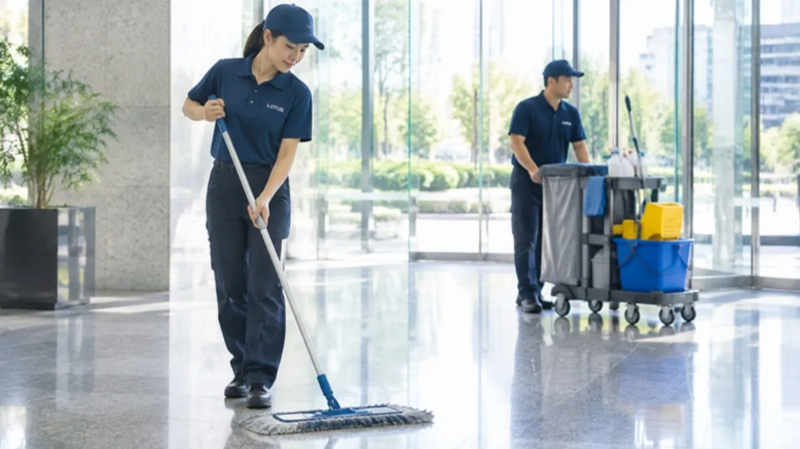
東京都・神奈川県時間厳守で作業介護・福祉施設の居室居室清掃20,000円〜(税別)業務用エアコン分解・高圧洗浄35,000円/台〜(税別)退去・入居前ハウスクリーニング19,000円〜(税別)オフィス・店舗定期清掃25,000円〜(税別)
代表の現場経験
清掃の現場を、
年間 1,000 件以上。
代表は清掃業界大手で社員として現場に立ち、その後は外部顧問として、仕組みの側から現場を見てきました。数多くの現場に携わらせていただいた経験を、清掃の手順と報告の仕方に込めています。
代表の経歴を読む ›- 約 15年清掃の
現場経験 - 約 1,000件以上/年年間の
現場数
台数の多い現場や広い施設にも、協力会社と連携して対応します。
NEW ・ 更新中
読みもの、新着。
すべて読む ↗写真を送るだけ無料お見積り。1 か所からでも、どうぞ。
無料で見積りを頼む ›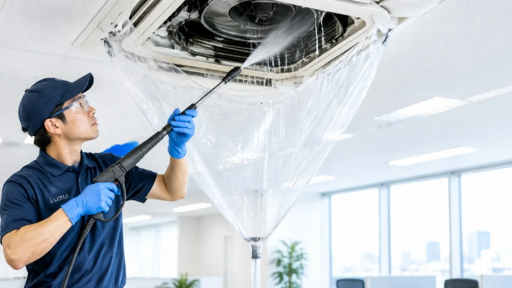
年末の前に天井のエアコン、まとめて洗いませんか
業務用エアコン天井カセット・天吊り
分解して、高圧洗浄。
35,000円/台(税別)
2 台以上はまとめ割 営業時間外もご相談ください
詳しくはこちら ›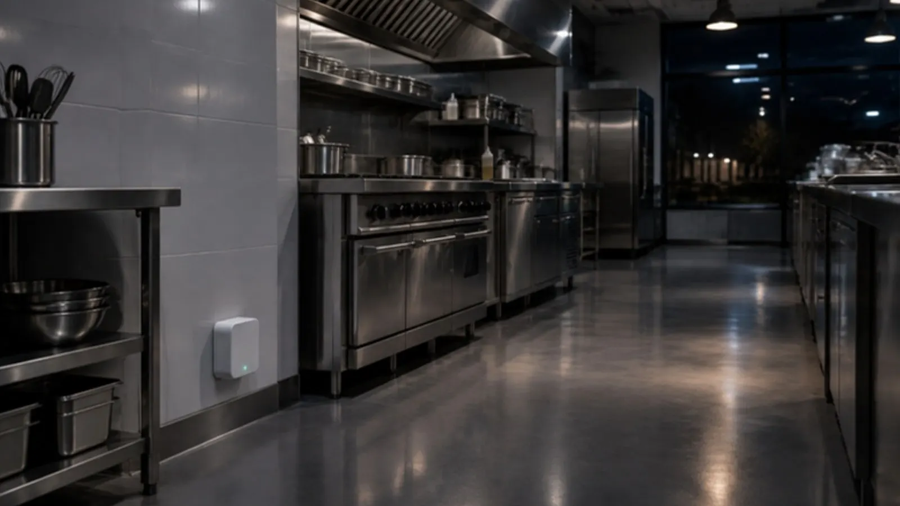
飲食店の方へゴキブリ対策を、夜のあいだに
害虫駆除機4 週間ごとに交換
置くだけで、
夜に自動で働く。
4,290円/台(4 週間・税別)
スポット駆除 20,000 円〜 帰る前に換気扇を切るだけ
詳しくはこちら ›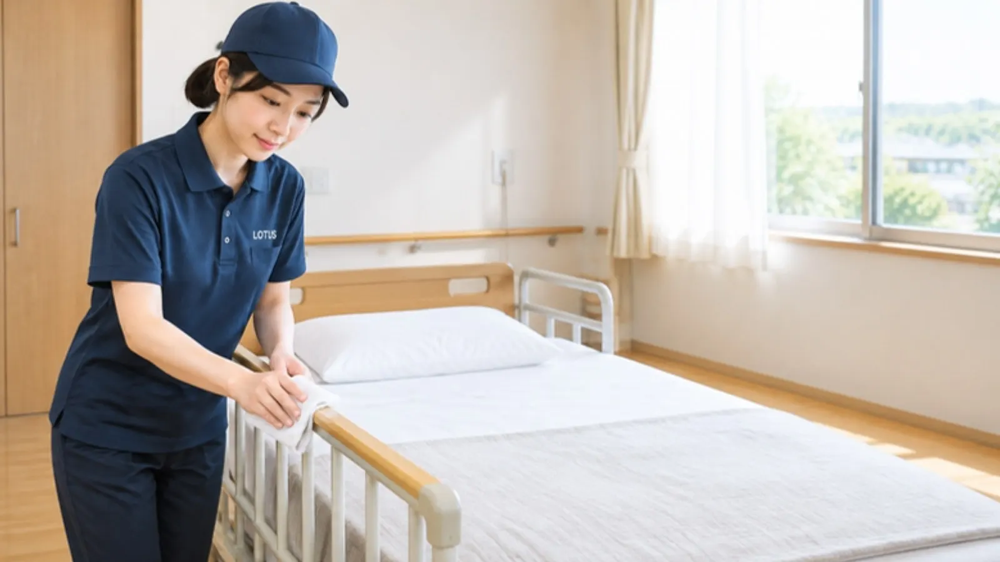
介護・福祉施設の方へ退去後の居室を、次の入居に備えて
居室清掃20㎡以下
居室、1 部屋から。
20,000円(税別)
写真でのお見積り無料 生活の時間を外して作業
介護施設のページへ ›オフィス・店舗きれいを、続ける契約
定期清掃作業ごとに報告書
床もトイレも、
決まった日に。
25,000円〜(税別)
頻度と範囲はオーダーメイド
定期清掃を見る ›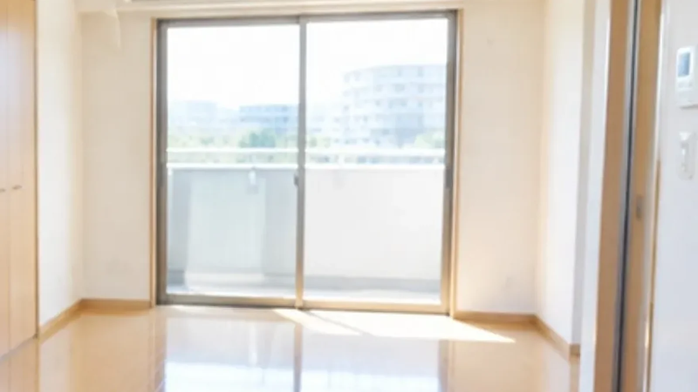
退去・入居前お部屋まるごと、ハウスクリーニング
1R(〜25㎡)キッチン・浴室・トイレ・床
次の人を、
迎える部屋に。
19,000円〜(税別)
場所だけのご依頼も OK
料金表を見る ›東京都・神奈川県の清掃サービス
共用部から、お部屋の中まで。
清掃・抗菌・害虫駆除・エアコン。
オフィス・店舗・飲食店・クリニック・ホテル・ご家庭・賃貸の空室。定期清掃からハウスクリーニング、エアコン、光触媒コーティング、害虫駆除まで、現場に合わせて組み立てます。初回は 1 か所だけでも構いません。
- 1 か所から相談できる
- 時間厳守約束の時間に終える
- 写真で報告作業前後を残す
- 東京・神奈川対応地域
メニューから選ぶ
場所から、お悩みから。
料金はすべて税別の目安です。正式な金額は、写真か下見でお見積りします。
- エアコンがにおう、効きが悪い。
天井のエアコンを分解して高圧洗浄。1 台 35,000 円(税別)、2 台以上はまとめ割。
業務用エアコンを見る → - 厨房に、ゴキブリが出る。
閉店後に自動で動く害虫駆除機を置くだけ。4 週間ごとに伺って交換します。
害虫駆除を見る → - 床の黒ずみ、ワックスのはがれ。
洗浄・ワックスの塗り直しを、営業時間外に。定期清掃なら仕上がりが続きます。
定期清掃を見る → - 退去後の部屋・空室を、きれいに。
キッチン・浴室・トイレ・床まで。間取りごとの料金を載せています。
お部屋の料金を見る → - オフィス・店舗を、定期的にまかせたい。
頻度と範囲を決めて、毎回写真付きでご報告。月 1 回からご相談ください。
定期清掃を見る → - 介護施設・福祉施設の清掃。
居室清掃を 1 部屋から。生活の時間を外して作業する、施設向けのページです。
介護施設のページへ →
メニューと料金
メニューと料金の目安。
表示価格はすべて税別。正式な金額は、下見または写真でお見積りします。ここに無い作業も、同じ流れでご相談ください。
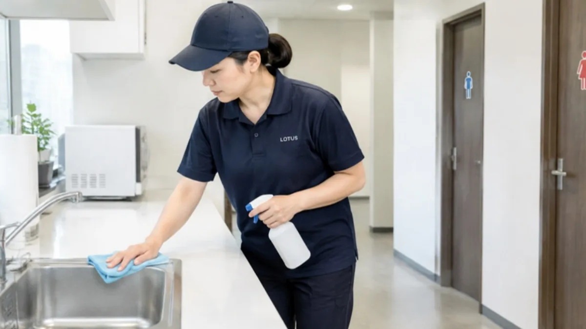
定期清掃25,000円〜共用部・キッチン・トイレ・浴室・リビング。現場と頻度に合わせてプランをオーダーメイドし、作業ごとに報告書をお出しします。
定期清掃を見る ↓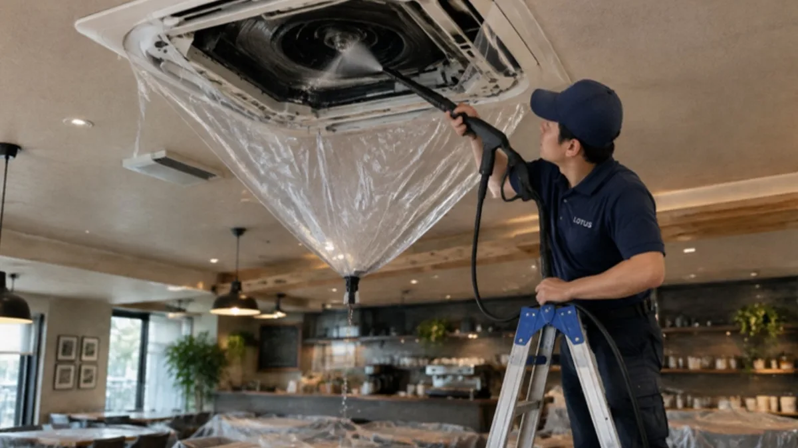
業務用エアコン35,000円 / 台天井カセット・天吊りを分解して高圧洗浄、試運転まで。2 台以上はまとめ割。営業時間外の作業もご相談ください。
業務用エアコンを見る ↓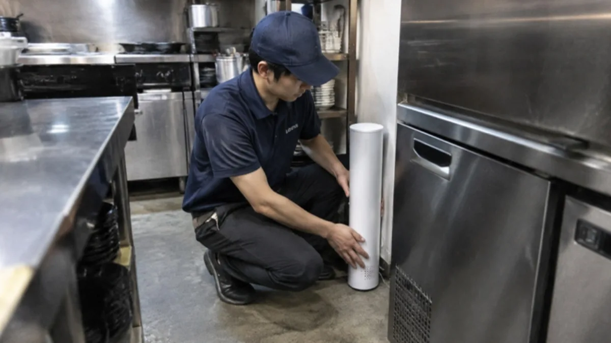
害虫駆除機4,290円 / 台(4週間)害虫駆除機を設置し、夜間に自動で稼働させるドライ方式。調査のうえ手作業での駆除・防除も。スポットは 20,000 円〜。
駆除機の強み ↓ セットメニューまとめて割安に
セットメニューまとめて割安に水まわり 3〜5 点セット、店舗の衛生セット、空調まとめ割。同じ日・同じ建物でまとめるほどお得です。
セットを見る ↓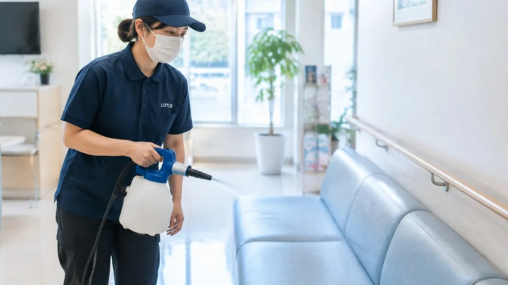
光触媒コーティング7,000円〜(1式)光に当たると働くコーティング「Nano Coat Pro」で、抗菌・消臭・防カビ。1㎡ 1,000 円から。店舗・施設まるごとは 59,800 円〜。
広さから相談 ↗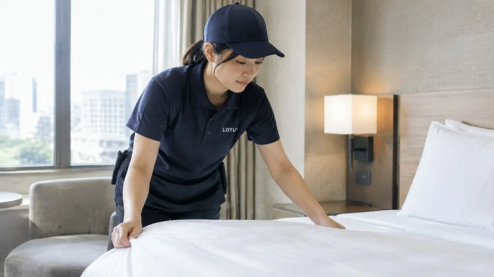
ホテル客室清掃4,000円〜 / 室フロア・水まわり・ベッドメイク・アメニティ補充・分別したごみ出し。〜30㎡ から 80㎡ まで、広さに合わせて。
客室の料金 ↓
お部屋・在宅のクリーニングはこちら。介護・福祉施設の居室清掃は、介護・福祉施設向けページでご案内しています。
清掃の読みもの
清掃の読みもの。
作業の順番と理由を、短い読みものにしています。1 本 5〜6 分。
NEW ・ ためになる仕事術 ・ 6分寒いのに、窓を少し開ける理由。冬の換気と「18℃・40%」
科学と自然の不思議 ・ 6分ほこりの正体は、外からやってくる。家のほこりの 6 割以上は屋外から
深い話 ・ 6分散らかりは、うつる。落書き 1 面で、ポイ捨ては 2 倍に
いまのブーム解剖 ・ 6分大掃除は、なぜ「秋」へ引っ越し始めたのか。8 割がやるのに、7 割がつらい行事
#01 ・ 6分退去後の居室、最初に見るべき 3 か所。掃除は、記録から始まる
#02 ・ 6分エアコンの内部洗浄を、「食事の時間」に当てない理由。部屋が空いている ≠ 作業していい
#03 ・ 6分ポリッシャーの音は、誰の昼寝を起こすか。低い音は、壁を越える
#04 ・ 6分床のワックスは、「滑りにくさ」とどう関係するか。光ることと、滑ることは別
#05 ・ 6分カーペットの汚れは、どこから来て、どこに溜まるか。入口の 2 メートルに集まる
#06 ・ 6分清掃の記録を、職員の手間なく残す方法。欄は三つまで。置き場所は動線の途中に
#07 ・ 5分きれいになった部屋で、いつもの物が見つからない。利用者の「いつも」を残す清掃
#08 ・ 5分家族が知りたいのは、床の光沢だけではない。清掃の報告を、暮らしの安心につなぐ
#09 ・ 5分「いまから掃除します」が、伝わったとは限らない。音より先に、予定を届ける #10 ・ 4分空室の写真見積り。汚れのアップの前に、部屋を一枚。全体・場所・接写の順に撮る
#11 ・ 6分 ・ 動画あり神奈川は 9 月にインフルエンザ注意報レベル。介護施設で見直したい「触る場所」。まず汚れを取る、消毒はその上で #12 ・ 5分 ・ 動画あり11 月 10 日は「いいトイレの日」。世界の 15 億人が持たないものを、施設は毎日守っている。トイレは「持つ」より「守る」 #13 ・ 6分 ・ 動画あり冬の夜、廊下で誰かが吐いた。ノロウイルスの後始末は「拭く」より「広げない」。静かに拭き取り、乾かすまでが仕事 #14 ・ 6分 ・ 動画ありお風呂のぬめりは、ただの汚れか。レジオネラ属菌が増える場所と、浴室の「ためない」段取り。菌の家は、目に見えない場所にある #15 ・ 深い話 ・ 6分 ・ 動画ありうまくいくほど、見えなくなる。「介護の日」に考える、何も起きない一日の値打ち。成果が「ゼロ」で表される仕事 #16 ・ 6分 ・ 動画あり冬の味方が、敵になる日。加湿器のタンクで、昨日の水に起きていること。つぎ足さない。毎日、替える #17 ・ 歴史の裏側 ・ 6分 ・ 動画あり死亡率 42% の病院を変えたのは、薬ではなかった。ナイチンゲールと、下水と換気の話。ランプより、窓 #18 ・ 心理学・行動経済学 ・ 6分「きれいにして」と言わずに、きれいにする。ナッジで考える、清潔が続く置き方
定期清掃
きれいを、続ける契約。
日常清掃では落としきれない汚れも、定期的にプロが入ることで、きれいな状態と建物の価値を保てます。25,000 円〜。現場確認とヒアリングのあとに、頻度と範囲を決めてお見積りします。作業ごとに写真付きの報告書をお出しします。
ホテル客室清掃
次のお客様を、迎える準備。
フロア・水まわり・ベッドメイク・アメニティの補充・分別したごみ出しまで。ごみの持ち帰りはしていませんが、回収業者の手配はご相談いただけます。
| 客室の広さ | 料金 |
|---|---|
| 〜30㎡ | 4,000 円〜 |
| 〜45㎡ | 6,000 円〜 |
| 〜60㎡ | 7,000 円〜 |
| 〜80㎡ | 9,000 円〜 |
業務用エアコン
天井のエアコンは、
会社の資産。
オフィス・店舗・施設の天井カセット・天吊りエアコンを、分解して高圧洗浄し、試運転まで行います。1 台 35,000 円(税別)、2 台以上はまとめ割。
フィルターだけでなく、熱交換器やドレンパンまで。水を受ける養生をして、営業時間外に進めます。
業務用エアコンは、フロン排出抑制法で管理者に 3 か月に 1 回以上の簡易点検(外観の確認)が求められています。清掃の機会にあわせて、外観の確認と記録もご相談ください。
同じ建物の複数台はまとめ割。年 2 回の定期に組み込めば、シーズン前の慌ただしさもありません。
業務用エアコンや電気設備を日常的に扱う会社なので、ブレーカーや機器の扱いでお店の手を止めません。
出典:三重県「フロン排出抑制法 管理者の義務」(簡易点検 3 か月に 1 回以上・すべての第一種特定製品が対象)
害虫駆除機
人がいない夜に、
機械が働く。
特許を取った専用の駆除機を、厨房などのちょっとした場所に置くだけ。閉店後の無人の時間に、ゴキブリが動き出す深夜に合わせて自動で稼働します。店長さんの作業は、帰る前に換気扇を切るだけ。食器の養生も、翌朝の洗い直しもいりません。
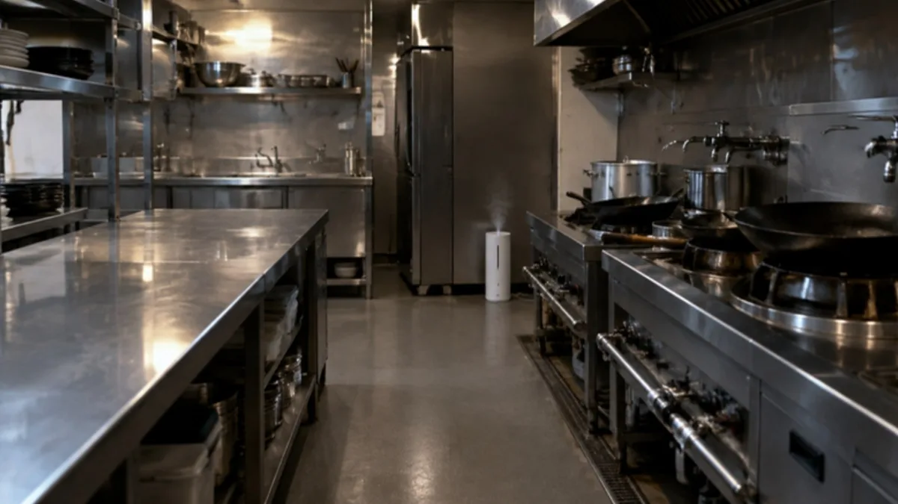
- 本体サイズ
- 高さ 410 × 幅 130 × 奥行 130 mm
- 仕組み
- ヒーター蒸散のドライ方式(特許取得)
- 稼働
- 営業時間に合わせてタイマー設定。閉店後に自動運転
- 電気代
- 1 日 7 円程度
- 薬剤
- 厚生労働省の承認を受けた医薬品の薬剤プレート(承認番号 第21066APZ00288000号)
- 交換
- 4 週間ごとにスタッフが効果を見ながら交換。1 回 10 分程度
ヒーター蒸散のしくみ
- 1温める
薬剤プレートをヒーターで一定に温めます。駆除の効き目は、薬剤がどれだけ安定して蒸散するかで決まります。
- 2床から満たす
蒸散した薬剤が、床から部屋全体をしっかり満たしていきます。人の手では届きにくい厨房機器の裏や隙間の奥まで。
- 3季節に左右されない
冬の冷え込みでも夏の暑さでも、ヒーターで温度を保つので蒸散する力が落ちません。
- 4続けて効かせる
1 回きりの駆除は、あとから卵からかえった個体に効きにくいのが弱点。毎晩の継続稼働で効果を一定に保ち、かえった後の個体まで駆除して数を減らしていきます。
選ばれる 4 つの理由
タイマーの設定はスタッフが行います。人による作業ではないので、担当者によるムラがなく、効果が安定します。休日出勤や残業での駆除作業もいりません。
無色透明で、薬剤がほとんど残らないドライ方式。翌朝の厨房をそのまま使えます。
4 週間ごとに伺い、発生の様子を見ながら薬剤プレートを交換します。所要時間は 10 分程度で、営業の邪魔になりません。
電気代は 1 日 7 円程度。人が何度も出向く駆除と比べて、続けやすい費用で効果を保てます。
よくある対策との違い
| 市販のスプレー・煙式・粘着式 | 人の手による単発の駆除 | 害虫駆除機(継続稼働) | |
|---|---|---|---|
| 効き方 | 見つけた分だけ。繁殖が追いつく | 作業した日は効く。あとから卵からかえった個体に効きにくい | 毎晩稼働して効果を一定に保つ |
| 手間 | 店のスタッフが毎回作業 | 休業日の立ち会い、食器の養生・洗い直し | 帰る前に換気扇を切るだけ |
| 品質 | 使う人しだい | 作業する人で差が出やすい | 機械のオート運転でムラがない |
| メニュー | 料金(税別) |
|---|---|
| 害虫駆除機(4週間の定期サービス) | 4,290 円 / 台 |
| 害虫駆除 1回スポット | 20,000 円〜 |
セットメニュー
まとめるほど、お得に。
同じ日・同じ建物で作業をまとめると、移動と段取りの分だけ安くできます。セット価格は単品合計からの割引で、お見積りに明記します。
キッチン + 浴室 + トイレ
単品合計 50,000 円 → セット割キッチン + 浴室 + トイレ + 洗面所
単品合計 65,000 円 → セット割4 点 + レンジフード
単品合計 75,000 円 → セット割定期清掃 + 害虫駆除機 + 光触媒コーティング
お見積りで セット割同じ建物の業務用 2 台以上。台数が増えるほど 1 台あたりは下がります。
35,000 円 / 台 → まとめ割月 1 回の定期に、床やエアコンの重点洗浄を年数回。
お見積りで セット割きれいにした直後に光触媒コーティングまで、1 回の訪問で。
お見積りで セット割お部屋・在宅のクリーニング
お部屋まるごと、または場所だけ。
空室・退去後・入居前のお部屋を、キッチン・浴室・トイレ・床まで。状態や設備で前後します。
| 間取り(広さ) | 料金 |
|---|---|
| 1R(〜25㎡) | 19,000 円 |
| 1K(〜25㎡) | 20,000 円 |
| 1DK(〜35㎡) | 22,000 円 |
| 1LDK(〜45㎡) | 25,000 円 |
| 2K(〜45㎡) | 30,000 円 |
| 2DK(〜45㎡) | 37,000 円 |
| 2LDK(〜55㎡) | 40,000 円 |
| 3DK(〜55㎡) | 43,000 円 |
| 3LDK(〜70㎡) | 47,000 円 |
| 4DK(〜80㎡) | 52,000 円 |
| 4LDK(〜85㎡) | 60,000 円 |
| 場所だけ・追加 | 料金 |
|---|---|
| レンジフード | 10,000 円 |
| キッチン(クリーニング・コーティング) | 20,000 円 |
| 浴室(クリーニング・コーティング) | 18,000 円 |
| 洗面所(クリーニング・コーティング) | 15,000 円 |
| トイレ(クリーニング・コーティング) | 12,000 円 |
| 鏡・ガラス研磨 ※ | 3,000 円 |
| ヤニ除去 ※ | 4,000 円 |
| 網戸交換 ※ | 3,000 円 |
※ 鏡・ガラス研磨、ヤニ除去、網戸交換は、ほかのクリーニングと同時のご依頼で承る追加メニューです(単独のご依頼は承っていません)。水まわりはセットがお得です。
選ばれる理由
頼みやすい、10 の理由。
清掃会社を選ぶとき、多くの方が気にするのは「何をどこまでやってくれるか」「いくらかかるか」「当日、誰がどう動くか」の 3 つです。LOTUS クリーンケアサービスは、その 3 つを先にお見せします。
A技術と品質
- 01機械に強い。
業務用エアコンや電気設備を日常的に扱う会社です。配線・ブレーカー・機器の扱いで、職員やお店の手を止めません。
- 02手順を決めてから動く。
場所ごとに「手順・止める条件・完了の目安」を決めて進めます。担当が替わっても、仕上がりがぶれないように。
- 03作業前後を写真で報告。
どこを、どこまで、どう仕上げたか。作業前後の写真と、気づいたこと(破損・におい・カビなど)をお渡しします。
B料金と頼みやすさ
- 04料金の目安を、先に公開。
主なメニューは税別の目安料金をこのページに載せています。問い合わせる前に、だいたいの予算がわかります。
- 05中身を決めてから、お見積り。
下見か写真で、何をどこまでやるかを決めてから金額を出します。写真でのお見積りは無料です。
- 061 部屋・1 台・1 店舗から。
居室 1 部屋、エアコン 1 台、厨房 1 か所からお受けします。まずは小さく頼んで、仕上がりを見てください。
- 07窓口はひとつ。
定期清掃、業務用エアコン、害虫駆除、光触媒コーティング、退去後の清掃、賃貸物件の管理まで。業者を分けずに、まとめてご相談いただけます。
C現場での振る舞い
- 08早朝・夜間・休日も。
営業時間外の作業もご相談ください。その場所の一日に、こちらが合わせます。
- 09止めない段取り。
音・におい・濡れた床・通り道。作業の前に場所と時間をお知らせし、営業や生活を止めない順番で進めます。
- 10道具は元へ、終わったら報告。
掃除をおろそかにしない「作務」の心構えを大切にしています。紺のユニフォームと LOTUS のロゴで、誰が来たかひと目でわかるように伺います。
こんな場所に
どんな場所に。
- 介護・福祉施設食事・入浴・レクの時間を外して。居室は 1 部屋から。専用ページあり。介護施設向けページ ↗
- オフィス・店舗カーペット、床、エアコン。営業時間外に。
- 医療・クリニック診療時間外の床・待合・空調。
- 保育・教育子どもが戻る前に終える段取りで。
- 賃貸・空室退去後の清掃と、次の入居までの段取り。
ご依頼の流れ
相談から作業まで。
- 01相談場所・広さ・希望の時間帯
- 02下見 or 写真現地か、写真でのお見積り
- 03見積作業内容と金額を書面で(税別)
- 04日程その場所の一日に合わせて
- 05作業動線と音の出る作業を調整
- 06報告作業前後の写真と、次回の提案
対応エリア
対応地域。
東京都23 区・多摩地域
神奈川県横浜・川崎ほか県内
地域外や離島は、移動の条件を含めてご相談ください。
よくある質問
よくある質問。
見積りだけでも頼めますか。
はい。写真でのお見積りは無料です。下見が必要な場合も、事前にお伝えします。
当日の追加料金はありますか。
見積りに無い作業が必要になった場合は、作業前にご説明し、了承をいただいてから進めます。黙って追加することはありません。
立ち会いは必要ですか。
最初と最後の確認にいていただけると助かりますが、鍵の受け渡しと連絡先があれば、不在でも対応できます。
営業時間外・早朝・休日もできますか。
できます。その場所の一日に合わせて組みます。
キャンセルはいつまでできますか。
日程を決めるときに、キャンセルの条件を書面でお伝えします。先に条件を出さずに請求することはありません。
落とせない汚れはありますか。
あります。下見や写真の段階で「落ちる・薄くなる・落ちない」を先にお伝えします。
BUILDING
ビル・マンションの管理も、LOTUS で。
共用部の定期清掃、入退去の原状回復、設備まわりの段取りまで。清掃と一体で管理をお受けします。 ビル・マンション管理を見る →
お部屋探し・事務所探しはこちら(協力会社・株式会社オーシャンクルー) ↗
まず 1 か所から。
気になる場所の写真を、送ってください。
写真でのお見積りは無料、資料もいりません。